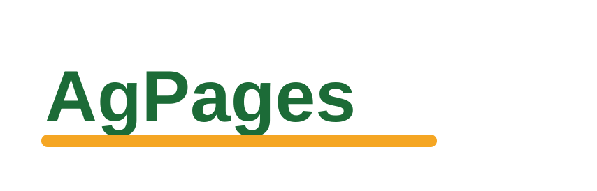

WordPress-style previewSupplier directories
Best rural directories for Australian suppliers
A practical guide to choosing useful directories for regional suppliers, with clear buyer intent, listing quality and enquiry paths.
Use this guide to compare visibility, audience quality and enquiry paths before choosing where to list your regional supply business.
Compare directory options
| Directory signal | What to check |
|---|---|
| Category pages | Buyers can browse by service type and region. |
| Lead paths | Contact buttons and forms are easy to find. |
FAQ
Do directory listings help local suppliers?
They can help when the directory has relevant buyer traffic and a listing page that explains your service clearly.